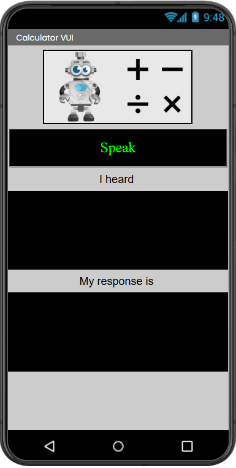

Finals - Hands-on Project (MIT App Inventor AI App Infographic)
Description: A mobile application development project focused on designing and deploying a Voice User Interface (VUI) Calculator using MIT App Inventor. The deliverable includes the functional Android application package and a comprehensive infographic detailing the system architecture.
Objectives/Purpose:
- To transition from predictive modeling into interactive application development.
- To implement cloud-based AI components, specifically Speech-to-Text (STT) and Text-to-Speech (TTS), within a mobile environment.
- To design an accessible, hands-free calculator driven entirely by natural language voice commands.
- To synthesize the application's logic and user flow into a professional, easily digestible infographic.
Key Features
- Voice User Interface (VUI): Replaced traditional touchscreen keypad inputs with a microphone-driven interface, allowing users to speak mathematical equations naturally.
- Auditory Feedback Loop: Integrated a Text-to-Speech engine that verbally announces the calculated result, ensuring a complete eyes-free and hands-free user experience.
- Visual System Architecture: Created a detailed infographic that maps out the underlying block logic, API calls, and data flow from the user's microphone to the final auditory output.
Important Code Blocks
1. Speech Recognition Trigger (Conceptual Block Logic)
Because MIT App Inventor uses visual block-based programming, the code below is a conceptual text representation of the event handlers used to trigger the device's microphone and capture the user's spoken string.
// Event Handler for Microphone Button
when btnMicrophone.Click do
call SpeechRecognizer1.GetText
// Event Handler for Processing the Spoken Audio
when SpeechRecognizer1.AfterGettingText(result) do
set txtInput.Text to result
call ProcessCalculation(result)2. Text-to-Speech Output
Once the string is parsed and the mathematical operation is executed, the application dynamically constructs a sentence and passes it to the TTS component for auditory playback.
// Function to Output the Result
def OutputResult(calculated_value):
set txtResult.Text to calculated_value
// Construct the verbal response
construct_message = join("The answer is ", calculated_value)
// Trigger the device speaker
call TextToSpeech1.Speak(message = construct_message)Screenshots & Results

VUI Architecture Infographic

Mobile Interface & Block Logic
Observations:
- The application successfully intercepted varying pronunciations of math operators (e.g., parsing both "plus" and "add" as the
+operator). The infographic effectively communicated this complex logical branching in a simplified, visual format.
Tools & Technologies
- Platforms: MIT App Inventor (Android Application Development)
- AI Components: SpeechRecognizer (STT), TextToSpeech (TTS)
- Design Tools: Canva / Graphic Design Software (for the Infographic)
Challenges & Solutions
Problems Encountered: Processing natural language in a calculator is significantly harder than capturing button clicks. When a user speaks "five times four," the SpeechRecognizer returns a raw text string. The application must identify the numbers and the operator within that string to perform actual math, which requires robust string manipulation.
How I Solved Them: I utilized App Inventor's text processing blocks (like split at spaces) to break the spoken sentence into a list of individual words. I then built conditional logic to iterate through the list, identifying keywords like "times", "multiplied by", or "x", mapping them to the correct mathematical operation, and executing the calculation on the surrounding numerical values.
Learning Reflection
What I Learned: I gained a practical understanding of Human-Computer Interaction (HCI) and accessibility. Building a Voice User Interface forces a developer to account for edge cases in human speech and error handling (e.g., what the app should say if it doesn't understand the audio).
Skills Gained: Mobile application logic architecture, integrating external device APIs (Microphone/Speaker), string parsing algorithms, and translating technical software architectures into client-facing infographics.